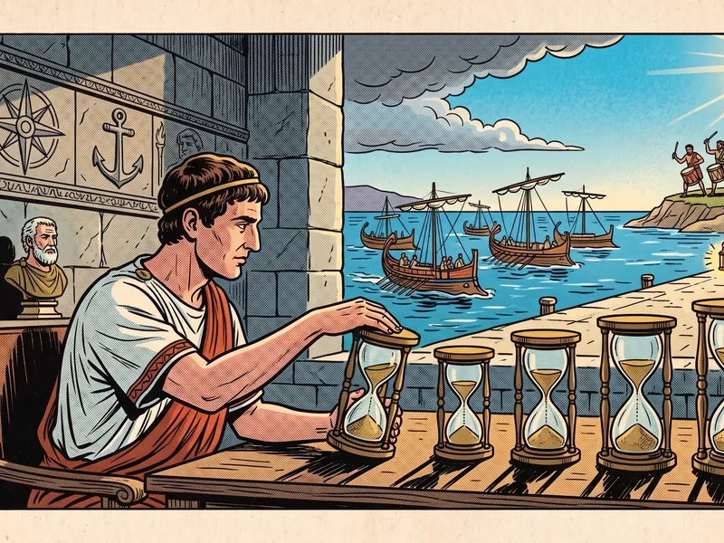
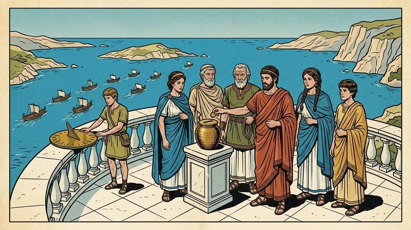

The Passable Season
Dwork, Lynch & Stockmeyer, "Consensus in the Presence of Partial Synchrony," 1988
After C. Dwork, N. Lynch & L. Stockmeyer, “Consensus in the Presence of Partial Synchrony,” JACM 35, 2 (April 1988), 288–323. Retold as the log of the navigators’ guild, with the bounds intact.
After the curse of Delphi (Volume III), the islands’ councils were in despair: no rite could be sure of reaching a verdict if the sea might delay a boat without limit. This volume is the logbook of the navigators’ guild that ended the despair — not by lifting the curse, which cannot be lifted, but by pointing out that the Aegean is not, in fact, an infinitely capricious sea.
The logbook was kept by three navigators, Ντουόρκ, Λίντς and Στόκμαγιερ. Readers may notice that one of the navigators was also one of the priestesses. The guild records do not comment on this.
The logbook is long, technical and thirty-six columns in length. I have kept its central table, its rites, and its lower-bound arguments; its clock constructions I have summarized.
— The Translator
Between Calm and Storm

1.1 · The Two Bounds of the Sea
The navigators studied agreement among N delegates, each starting with a value and all required to decide on the same value — and, if they all start with the same value v, to decide v. Some delegates may be faulty, and the navigators distinguished four kinds of fault, from mildest to worst:
- The Sleeper (fail-stop): follows the rite correctly, but may stop at any time and never restart.
- The Forgetful (omission): follows the rite, but some letters he sends are never placed in the harbour, and some he receives he ignores.
- The Liar with a Seal (authenticated Byzantine): behaves arbitrarily, but his letters can be sealed so that no one can forge another’s seal.
- The Liar (Byzantine): behaves arbitrarily, with no seals — though a receiver always knows who handed him a letter.
The weather was described by two bounds. Δ is the longest time a boat takes to deliver a letter. Φ is the most by which one delegate can be slower than another: in any span of Φ moments, every sound delegate takes at least one step. If both bounds exist and are known in advance, the sea is synchronous, and the older rites apply: with seals, any number of faults can be tolerated; without them, the generals of Volume II showed N ≥ 3t + 1 is needed. If either bound does not exist at all, the sea is asynchronous, and the curse of Delphi, as extended by later soothsayers, says no rite tolerates even one sleeper.
The navigators studied the seas in between.
1.2 · Two Kinds of In-Between

The first natural in-between sea is one where a bound Δ exists, but no one knows what it is. The curse does not apply, since the sea is in fact bounded. But every known rite needs Δ in order to know how long to wait each round. One could guess some Δ and declare anyone whose letter takes longer to be faulty — but guess too small and soon every delegate is “faulty”, and the verdicts of faulty delegates need not agree with anyone’s. What is wanted is a rite with no Δ built in, correct whenever some fixed Δ holds.
The second is one where Δ is known, but the harbour is sometimes unreliable, delivering letters late or not at all. A late letter must not make its sender faulty. Without further constraint this is as bad as a fully asynchronous sea. So the navigators imposed one: for each voyage there is a Global Stabilization Time — the start of the Passable Season, GST — unknown to the delegates, from which point on the harbour respects Δ.1
Separate the requirements into safety — no two sound delegates ever disagree, and none decides an improper value — and termination — every sound delegate eventually decides. A rite that solves consensus whenever Δ holds from some GST onward cannot violate safety even if the sea is completely asynchronous. For a safety violation happens at some finite moment, and there is a continuation of that very voyage in which Δ holds afterwards.
This short observation is the whole bargain of the later volumes: safe always, live eventually. The navigators framed each version as a game between a rite-maker and an adversary. If Δ is known, the adversary names Δ and the rite-maker then supplies a rite. If Δ is unknown, the rite-maker supplies the rite first and the adversary then names Δ. If Δ holds eventually, the adversary names Δ, the rite-maker (knowing it) supplies the rite, and the adversary then picks the day the calm begins. Replacing Δ by Φ gives the same three kinds of weather for the delegates’ own speeds.
The Navigators’ Table
The heart of the logbook is a single table. For each kind of fault and each kind of weather, it gives Nmin, the smallest number of delegates for which a rite tolerating t faults exists.
| Kind of fault | Synchronous | Asynchronous | Partially synchronous boats, steady rowers | Partially synchronous boats and rowers | Steady boats, partially synchronous rowers |
|---|---|---|---|---|---|
| Sleeper (fail-stop) | t | ∞ | 2t + 1 | 2t + 1 | t |
| Forgetful (omission) | t | ∞ | 2t + 1 | 2t + 1 | [2t, 2t + 1] |
| Liar with a seal | t | ∞ | 3t + 1 | 3t + 1 | 2t + 1 |
| Liar (Byzantine) | 3t + 1 | ∞ | 3t + 1 | 3t + 1 | 3t + 1 |
Two lessons are drawn from it. First, for sleepers, the forgetful and liars with seals, the resilience in a partially synchronous sea lies strictly between the synchronous and asynchronous cases: a majority of sound delegates (2t + 1) is exactly what is needed to tolerate t sleepers. Second, when boats are partially synchronous, seals do not help: liars need 3t + 1 delegates with or without them. Surprisingly, making the rowers partially synchronous as well changes nothing in the table, only the time the rites take. In every case the time to reach a verdict is polynomial in N and Δ (and Φ) when the bounds are unknown, and GST plus such a polynomial when they hold eventually.
The Rounds of the Harbour
The navigators first designed their rites in an idealized harbour, the basic round model, and later showed how real seas can imitate it. In the basic model, time passes in numbered rounds that all delegates share. Each round has a sending part, a receiving part and a thinking part. Letters may be lost — but from some round GST onward, every letter from a sound delegate to a sound delegate arrives in the round it was sent. The delegates do not know which round is GST.
All the rites share a common method. A delegate p tries to get the others to switch to some value v he has found acceptable, and decides v once enough of them acknowledge the switch that no different value can ever be found acceptable later.

3.1 · Rite One: Sleepers and the Forgetful (N ≥ 2t + 1)
Each delegate keeps a set PROPER of values he knows to be proper: if all delegates started with the same v, only v is proper; otherwise every value is. PROPER starts as his own starting value, is attached to every letter, and grows with every value he sees in others’ PROPER sets.
Rounds are grouped into phases, numbered 1, 2, 3, …, each a three-round trying phase followed by a one-round lock-release phase. Phase k belongs to delegate pi where k ≡ i (mod N) — the lantern passes round the harbour. A delegate may moor (the logbook says lock) to a value v at phase k; the mooring means “I think the owner of phase k might decide v”, and he casts it off only when he learns he was wrong. A value is acceptable to a delegate if he is moored to no other value.

- Round s. Every delegate sends pi the list of values that are both acceptable to him and in his PROPER set.
- Round s + 1. If at least N − t delegates found some v acceptable and proper, pi picks such a v and broadcasts (lock v, k).
- Round s + 2. Anyone receiving (lock v, k) moors to v at phase k (casting off any older mooring to v) and sends an acknowledgment. If pi receives at least t + 1 acknowledgments, he decides v — and keeps taking part.
- Lock-release, round s + 3. Every delegate broadcasts all his moorings (v, h). A delegate moored to v at phase h who hears of a mooring (w, h′) with w ≠ v and h′ ≥ h casts off his mooring to v.
3.1. No two distinct values acquire moorings with the same phase number — the phase’s owner would have to send two conflicting lock letters, which a sleeper or forgetful delegate never does.
3.2. If some delegate decides v at phase k, the first phase with any decision, then at least t + 1 delegates moor to v at phase k, and each of them stays moored to v at phase ≥ k for ever after.
3.3. Immediately after any lock-release phase at or after GST, the sound delegates are moored to at most one value.
Why a mooring to the decided value is never cast off (Lemma 3.2)
- Suppose some mooring to v made at phase k is first cast off, without being replaced by a higher one, at lock-release phase l. Then someone was moored to w ≠ v at some phase h with k ≤ h ≤ l.
- By Lemma 3.1, h ≠ k, so k < h ≤ l. For w to be moored at phase h, it must have been acceptable to at least N − t delegates at the start of phase h — so at least N − t delegates were not moored to v.
- But t + 1 delegates were moored to v through the start of phase l, and (N − t) + (t + 1) > N. Impossible. ∎
In the basic model with sleepers or forgetful delegates and N ≥ 2t + 1, Rite One achieves consistency, strong unanimity and termination for any set of values.
Consistency: after the first decision, t + 1 delegates stay moored to v, so no other value can ever again be acceptable to N − t, and none is decided. Unanimity: if all start with v, only v is ever proper. Termination: take any trying phase owned by a sound delegate that follows a lock-release phase at or after GST. At most one value is moored (Lemma 3.3), it has had time to become proper to everyone, and there are at least t + 1 sound delegates — so a proper, acceptable value is found, locked and acknowledged, and the owner decides. All sound delegates decide by round GST + 4(N + 1).
3.2 · Rite Two: Liars with Seals (N ≥ 3t + 1)
Against liars, the owner of a phase may send conflicting lock letters, so the mooring must carry evidence. Rite Two is Rite One with three changes. Each lock letter carries a proof of acceptability: the N − t sealed lists showing v acceptable and proper. The owner decides only on 2t + 1 acknowledgments, of which at least t + 1 come from sound delegates. And PROPER grows more cautiously: a value is added only when t + 1 delegates vouch for it, and all values become proper once a delegate has seen 2t + 1 starting values among which no t + 1 agree. Lock-release broadcasts the sealed lock letters themselves. The same lemmas hold for moorings of sound delegates, and all decide by GST + 4(N + 1).
3.3 · Rite Three: Liars Without Seals (N ≥ 3t + 1)
Without seals, the navigators imitated them with a relay borrowed from Σρικάντ and Τωυεγ: the echo. Time is grouped in superrounds of two rounds. To BROADCAST m, p sends (init, p, m, k). Anyone who received exactly one such init from p echoes it to all. Anyone who has heard an echo from N − 2t delegates keeps echoing it every round thereafter; anyone who has heard it from N − t accepts m from p. This gives three properties that stand in for seals:
- Correctness. If a sound p broadcasts m in superround k ≥ GST, every sound delegate accepts it in superround k.
- Unforgeability. If a sound p does not broadcast m, no sound delegate ever accepts m from p.
- Relay. If a sound delegate accepts m from p in superround r, every sound delegate accepts it by superround max(r + 1, GST).
The navigators’ one change to the original echo — re-sending it every round rather than once — is needed because letters may be lost before the calm. Rite Three runs Rite Two over echoes instead of seals, with trying phases of three superrounds, and all decide by GST + 6(N + 1). The logbook adds that the time after GST can be cut to O(t) rounds — optimal, since t + 1 rounds are needed even in a synchronous sea — by having deciders repeatedly announce “Decide v”.
Moorings and Releases
It is worth pausing on the shape of Rite One, for the reader of Volume V will recognize it. A rotating leader asks a quorum what values it may safely propose; it proposes only a value acceptable to N − t delegates; the delegates attach a phase number to the promise they make; they abandon a promise only for one with an equal or higher phase number; and a decision requires enough acknowledgments that any later quorum must contain someone still bound by it. Two different majorities of 2t + 1 delegates must share a member.
The part-time parliament of Paxos, whose account was first submitted a few years after this logbook, arrives at the same geometry by a different road — its own Relevance section notes that its theorems are similar to results of the navigators, though their rites run ballots in separate rounds and seem unrelated to the Synod’s.
Sailing Without a Chart
Real seas have no shared round numbers. The navigators showed how delegates with steady rowing (Φ = 1, so every delegate can count his own strokes and all counts agree) can imitate the basic round model.
5.1 · When the Calm Comes Eventually
If Δ is known and holds from GST, let R = N + Δ. Each delegate groups his strokes in Rs. In the r-th group he spends the first N strokes sending his round-r letters, one delegate at a time, and the last Δ strokes receiving; his round-r thinking happens at the last stroke. Every letter is tagged with its round, and a letter that arrives in a later round is ignored. Once the calm has come, a group of R strokes is long enough for every letter of the round to arrive, so the voyage imitates a basic-model voyage with the same sound delegates and the same faults. The three rites become Rites 1′–3′, deciding within 4(N + 1)(N + Δ) strokes after GST (6(N + 1)(N + Δ) for Rite 3′).
5.2 · When the Bound Is Unknown

If Δ exists but is unknown, the navigators’ trick is charmingly simple: wait a little longer each round. Let the r-th group contain Rr = N + r strokes. Whatever Δ the sea actually has, every round r ≥ Δ allows enough time for all its letters to arrive — so the voyage imitates a basic-model voyage with GST = Δ. Rites 1²–3² decide within Δ(N + Δ) + 4(N + 1)(N + Δ + 4(N + 1)) strokes, which is O(N² + Δ²).
If, further, no letter is ever lost but letters before GST may arrive late, delegates can even stop: a decider sends a single untagged “Decide v”, and others decide on receiving one (or t + 1, against liars). But if letters may be lost before GST, then in any rite tolerating one sleeper, some sound delegate must go on sending letters for ever.
Where the Bounds Come From
The navigators proved that their rites could not be improved. The arguments are storm stories.
With sleepers or the forgetful, steady rowers and partially synchronous boats (either kind), if 2 ≤ N ≤ 2t, no t-resilient rite achieves even weak unanimity for two values.

The storm story
- Split the delegates into two groups P and Q, each of at least 1 and at most t.
- Scenario A: all start with 0, Q is dead from the start, letters within P take exactly one moment. P must decide, within some time TA. The decision must be 0 — otherwise let Q be alive but its letters to P take longer than TA; P still decides 1 while everyone started with 0.
- Scenario B: all start with 1, P is dead, letters within Q take one moment. Q decides 1 within some TB.
- Scenario C: P starts with 0, Q with 1, everyone is alive, letters within each group take one moment, and letters between the groups take longer than max(TA, TB) — a storm before the calm. P behaves exactly as in A and decides 0; Q exactly as in B and decides 1. ∎
With liars with seals, steady rowers and partially synchronous boats, if 2 ≤ N ≤ 3t, no t-resilient rite achieves weak unanimity for two values.
The proof splits the delegates into three groups P, Q, R, each of at most t. In scenario A, R is dead and everyone starts with 0; in B, P is dead and everyone starts with 1. In C, P starts with 0, R with 1, and Q is faulty and plays scenario A toward P and scenario B toward R — seals notwithstanding, since it is only ever sealing its own letters — while a storm holds all letters between P and R. The same bound for liars without seals is already known from the synchronous case of Volume II, so Rite Three is optimal too.
The Drummers of the Islands

When the rowers too are only partially synchronous, no delegate can count strokes and trust that others’ counts agree. The navigators therefore built distributed clocks — fault-tolerant descendants of the monotonic bead of Volume I — out of two kinds of drumbeat. An i-tick is the message “i”. An i-claim is “I have broadcast an i-tick.” Each delegate cycles through all N delegates, drumming ticks, then claims, and advancing whenever his own clock has advanced.
For liars without seals (N ≥ 3t + 1), the master clock C(s) at real time s is the largest j such that t + 1 sound delegates have broadcast a j-tick; delegate i’s private clock ci(s) is the largest j such that he has received either j-or-higher claims from 2t + 1 delegates, or (j + 1)-or-higher ticks or claims from t + 1. Each delegate drums the tick ci + 1. The navigators prove that private clocks never run ahead of the master (ci(s) ≤ C(s)), that the master advances at most one per moment, and that soon after GST the private clocks trail the master by at most a constant and the master advances at a rate no slower than a constant fraction of real time. A version with seals needs only N ≥ 2t + 1 and serves for sleepers and the forgetful as well.
Each delegate then uses two of every three steps to keep the clock and the third to imitate the basic round model, reading the current round from his private clock in groups of R = 3NΦ + 2D + 2 ticks, where D = Δ + 3Φ — or Rr = 3Nr + 8r + 2, growing, when the bounds are unknown. Once again the resiliencies of the table are achieved, with polynomial time.
Finally, for steady boats but partially synchronous rowers, the logbook uses a basic model with signals — a signal to a delegate in round r guarantees that every sound delegate received his round-r letters — and obtains the last column of the table: a simple rotating rite tolerating any number of sleepers, and N ≥ 2t + 1 for liars with seals.

Relevance to Computer Science
| In the logbook | In the paper |
|---|---|
| Δ, the longest crossing | Upper bound on message delivery time |
| Φ, the slowest rower | Upper bound on relative processor speed |
| The Passable Season begins | Global Stabilization Time (GST) |
| Sleeper, forgetful, liar with a seal, liar | Fail-stop, omission, authenticated Byzantine, Byzantine faults |
| Phases belonging to captains in turn | Rotating coordinator |
| Mooring with a phase number | Lock on a value with an associated phase |
| The echo | Srikanth–Toueg authenticated-broadcast simulation |
| Waiting longer each round | Simulation with round length N + r for unknown Δ |
| Drummers’ ticks and claims | Fault-tolerant distributed clocks |
“Partial synchrony” — in particular the GST formulation — is the standard system model for practical consensus. It explains the design pattern shared by Paxos, Viewstamped Replication, PBFT and Raft: never violate safety, no matter how messages are delayed, and guarantee progress only once the network behaves for long enough, typically by retrying leader elections with increasing timeouts — the same idea as the navigators’ growing hourglasses. The table’s 2t + 1 for crash faults and 3t + 1 for Byzantine faults are precisely the replica counts used by Raft and PBFT.
References
- Dolev, D., Dwork, C., and Stockmeyer, L. 1987. On the minimal synchronism needed for distributed consensus. Journal of the ACM 34, 1, 77–97.
- Dwork, C., Lynch, N., and Stockmeyer, L. 1988. Consensus in the presence of partial synchrony. Journal of the ACM 35, 2 (April), 288–323.
- Fischer, M. J., Lynch, N. A., and Paterson, M. S. 1985. Impossibility of distributed consensus with one faulty process. Journal of the ACM 32, 2 (April), 374–382.
- Lamport, L. 1978. Time, clocks, and the ordering of events in a distributed system. Communications of the ACM 21, 7 (July), 558–565.
- Pease, M., Shostak, R., and Lamport, L. 1980. Reaching agreement in the presence of faults. Journal of the ACM 27, 2 (April), 228–234.
- Srikanth, T. K. and Toueg, S. 1987. Simulating authenticated broadcasts to derive simple fault-tolerant algorithms. Distributed Computing 2, 2, 80–94.
🏛️ Foundational Research Papers
The modern mathematical proofs that inspired this volume are preserved in the archive: